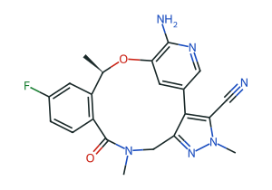

✓
1 读取与校验
SHA-256 88f35d03…3096 · 有文本层
新增 · 上传入口
✓
2 识别文档
专利 · 公开号 WO2013132376A1 · 与已知公开 PDF 哈希一致
新增 · 来源等同公开版本
✓
3 公共记录匹配
家族 48142828 · 优先权 2012-03-06 · 已在调研「ALK 大环系列」
现有 · 可选联网
4 页面分区
识别活性表、实施例、中间体页并保留依据 · 已定位 Table 1（PDF p.436）
现有 · 仅在示例页上测过
5 逐级抽取
结构图与活性表；编号核对、冲突保留、质谱与名称交叉校验给出置信度
控制逻辑现有 · 抽取器新增（I3b）
6 写入台账
以“待确认”提交；实验对不上的记录拒绝并说明原因；生成低置信度在前的复核报告
现有
抽取预览
全部为 L0 · 待确认，尚未与原文逐项核对 与调研中已有证据卡相同的结构会自动合并
Example 2p.260
与已有 L2 证据卡一致 · 合并
结构识别中
Example [n]p.[n]
待核对
通式 + 取代基表
需人工组合
需人工组合
Example [n]p.[n]
无法自动识别 · 已标记
结构识别中
Example [n]p.[n]
待核对
可以在抽取完成前开始核对已识别的条目
加入「ALK 大环系列」并开始核对 →